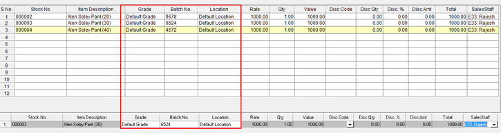
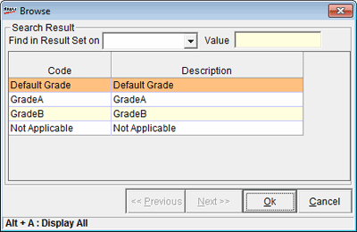
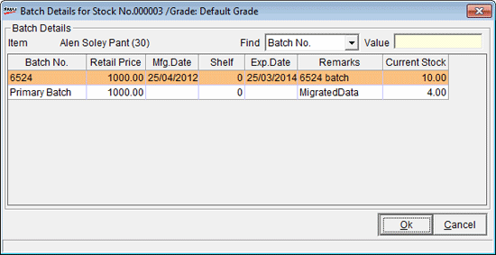
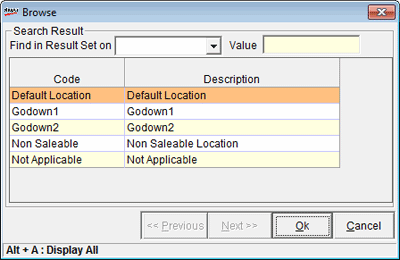

The Batch, Grade and Location enable billing screen is displayed as shown.

Grade: If different grades are available for the selected SKU, then the grade browse window is displayed as shown.

Search Results: Helps to search grade.
Find Result Set on: Select the search based on BatchNo., Retail Price, Mfg. Date, Shelf Life, Exp. Date, Remarks, Current Stock.
Value: Enter the search key
Code and Description: Displays the grade code and description according to the search. Select the desired grade for billing.
Batch: If different batches are available for the selected SKU, then the batch selection window is displayed as shown.

Find: Select the search based on BatchNo., Retail Price, Mfg. Date, Shelf Life, Exp. Date, Remarks, Current Stock.
Value: Enter the search key
Grid: Displays the batch details according to the search. Select the desired batch for billing.
Location: If stock is available for the selected SKU in different locations, then the location browse window is displayed as shown.

Search Results: Helps to search location.
Find: Select the search based on Code or Description.
Value: Enter the search key
Code and Description: Displays the catalogued location's code and description where stock is available for the selected SKU. Select the desired location for billing.
Note: If the selected location is configured as Non Saleable in System Parameter, then billing will not proceed.